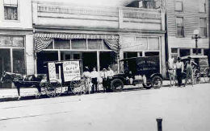

portfolio.

project

project

project


I have 6+ years of experience developing desktop and console applications. After attending a
Ruby on Rails development weekend at the end of 2013, I decided I wanted to pursue web full-time.
I spent the next several months familiarizing myself with Ruby on Rails as well as taking on an
ASP.NET project at work. In March of 2014 I was accepted into the Front End Web Engineering Academy
at The Iron Yard, and I started the journey in April.
When I'm not pumping out clean, responsive webification, I enjoy being outdoors with my wife, listening to
and creating great music, and pursuing a fantasy career in disc golf.